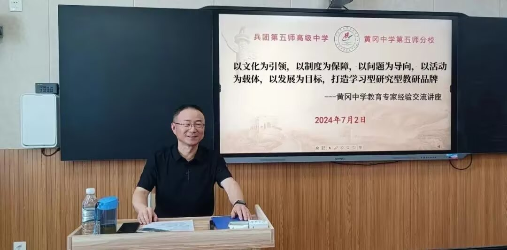

Journal · 2025-01-09
湖北省武汉市
有些无聊，发条说说，看看会不会被腾讯屏蔽
“我有一个偶像，偶像的尊称是熊专家。”熊专家是黄州府文综课研组成员，也是鄂省教育学会历史专委会常务理事。
在甲辰国考前夕，熊专家对自己带过的最后一届学生说：“我退休后，我想离开这个地方……我要周游列国。”他曾去过台省。
彼时彼刻，在座的某位学生也想离开那个地方，也想周游列国！
教研员同志卸任了又何妨！黄州府还有改革家呢！何局长还在职呢！
笔者曾有感而发，在小本本上记载了那段往事:
“与君初会，在昔庚子。
在彼黄州，赤壁之隅。
苏门遗绪，承教有期。
三载同研，学术共趋！”
挺无聊的，但幸运的是，这回发的说说没被屏蔽
